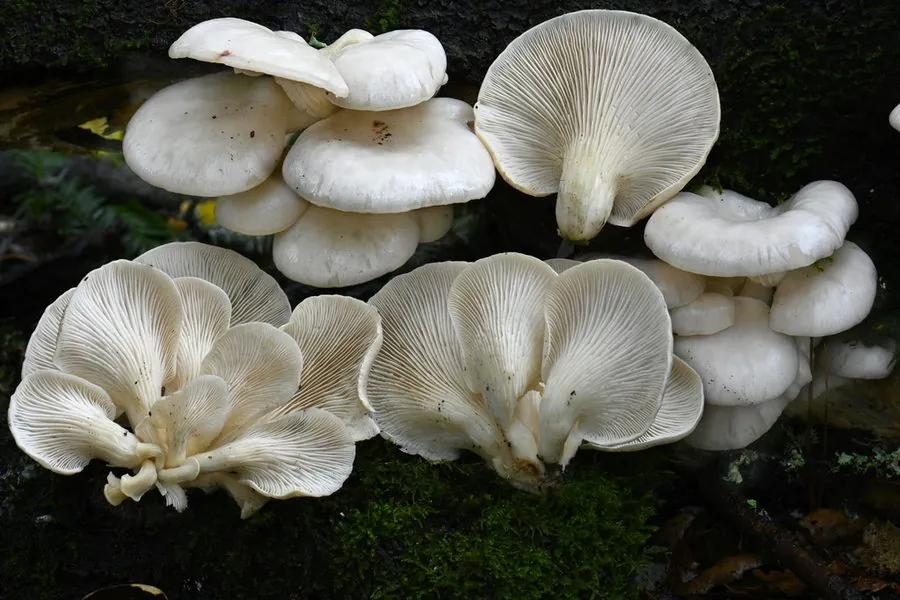

真菌 · 真菌界
肺形侧耳 Pleurotus pulmonarius

侧耳科食用菌，菌盖扇形、色浅如肺，丛生于阔叶树枯木，是夏季栽培的平菇类，可食且易人工栽培。
- 分类
- 门担子菌门纲伞菌纲目伞菌目科侧耳科属侧耳属
- 栖息环境
- 阔叶树枯木、倒木与人工栽培基质上，夏秋发生
- 地理分布
- 北半球温带至亚热带分布，中国各地栽培，欧洲、北美有野生记录
- 保护级别
- 暂无评估；野生与栽培种群均充足
物种志
肺形侧耳的菌盖直径 4–12 厘米，扇形至半圆形，表面白色至淡灰、淡黄褐色，光滑，边缘薄而内卷，常呈波浪状。菌肉白色，柔嫩。菌褶白色至淡黄，延生，密集。菌柄短，长 1–3 厘米，侧生或偏生，白色，基部有绒毛。孢子印白色至淡紫色，孢子长椭圆形。
肺形侧耳丛生于阔叶树的枯木、倒木上，夏秋发生，是侧耳属中较耐高温的种类，因此被称为“夏季平菇”。它肉质柔嫩、味道清淡，可炒、涮、做汤，是人工栽培最广泛的食用菌之一，可用棉籽壳、木屑、玉米芯等基质栽培，生物转化率高。与同属的平菇相比，它菌盖更薄、颜色更浅、耐热性更强。栽培时需注意通风，二氧化碳浓度过高会导致菌柄徒长、菌盖畸形。
形态与习性
- 菌盖直径 4–12 厘米，扇形，白色至淡灰黄色
- 菌柄长 1–3 厘米，侧生或偏生，基部有绒毛
- 孢子印白色至淡紫，孢子长椭圆形
- 生境阔叶树枯木，夏秋发生，耐高温
- 食用性肉质柔嫩、味道清淡，可炒涮做汤
- 栽培棉籽壳、木屑等基质栽培，转化率高
趣味知识
- 肺形侧耳耐热性强，是夏季也能出菇的平菇类，被称为“夏季平菇”。
- 它菌盖薄、颜色浅，与常见平菇相比口感更嫩、草腥味更淡。
- 栽培时若通风不良、二氧化碳积聚，菌柄会徒长、菌盖变小呈喇叭状。
- 侧耳属靠分解木质素与纤维素生长，是农业秸秆资源化利用的重要菌种。